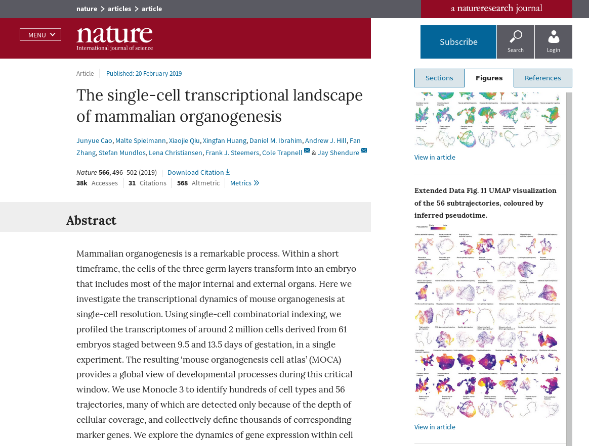
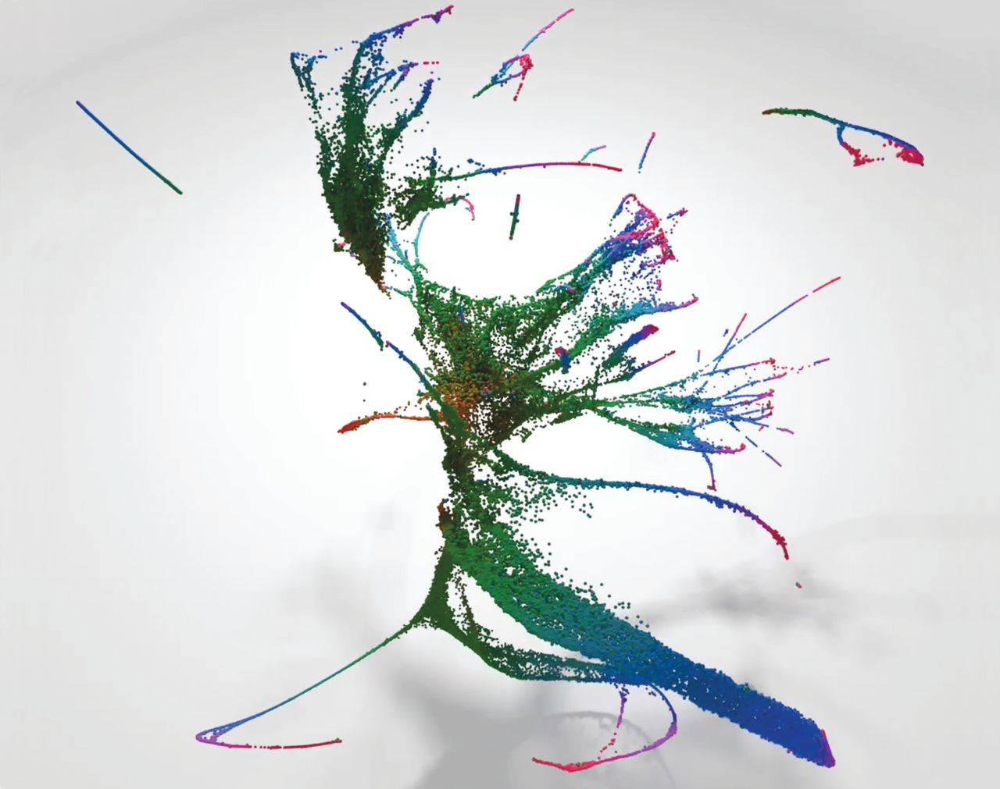
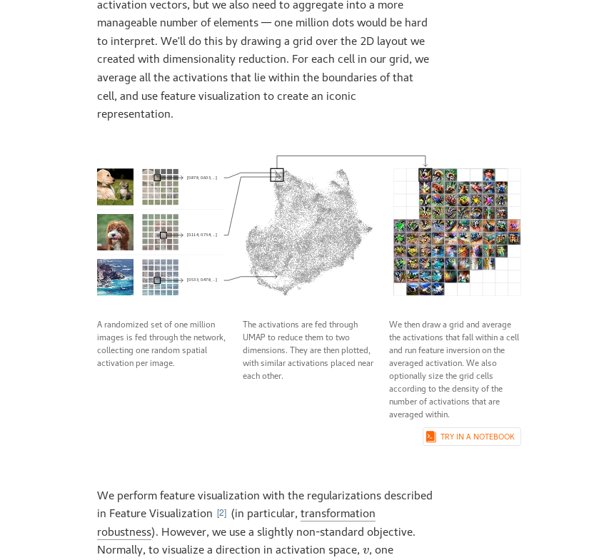
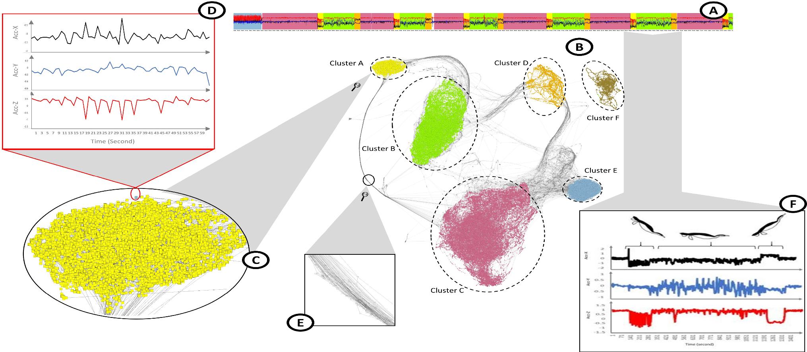
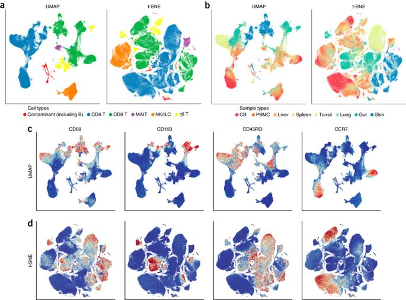
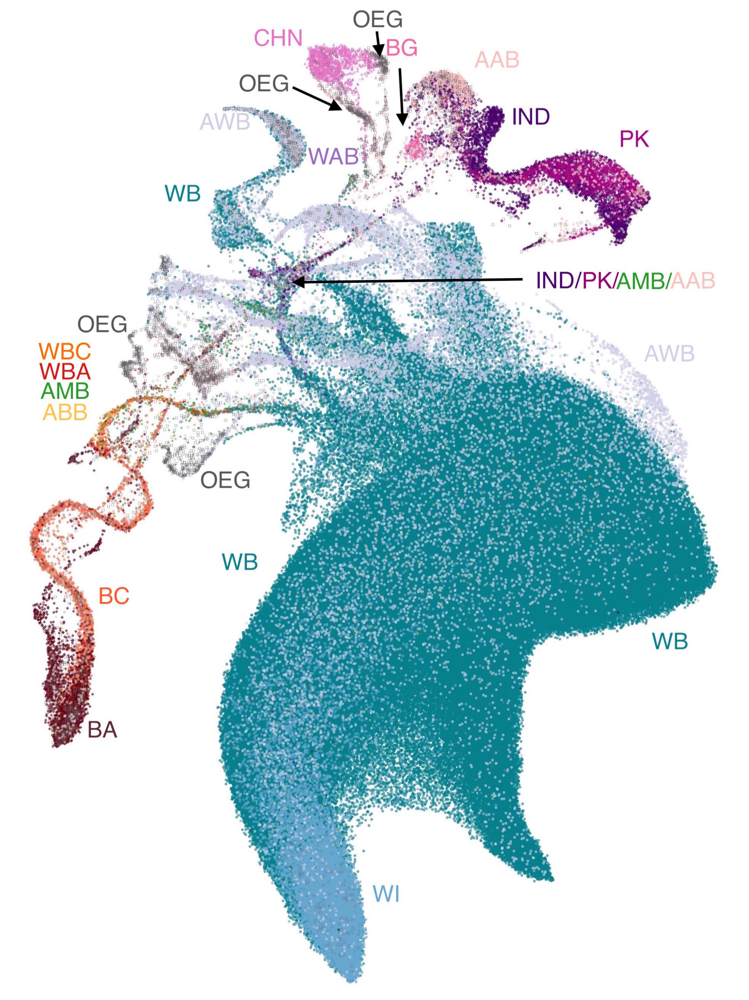
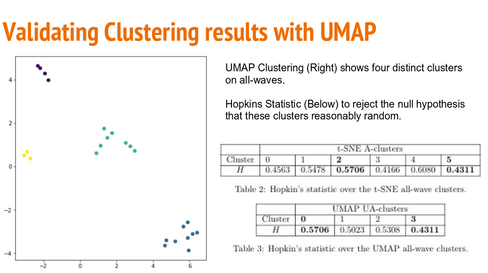

Scientific Papers
UMAP has been used in a wide variety of scientific publications from a diverse range of fields. Here we will highlight a small selection of papers that demonstrate both the depth of analysis, and breadth of subjects, UMAP can be used for. These range from biology, to machine learning, and even social science.
The single-cell transcriptional landscape of mammalian organogenesis
A detailed look at the development of mouse embryos from a single-cell view. UMAP is used as a core piece of The Monocle3 software suite for identifying cell types and trajectories. This was a major paper in Nature, demonstrating the power of UMAP for large scale scientific endeavours.
{kind=link}
A lineage-resolved molecular atlas of C. elegans embryogenesis at single-cell resolution
Still in the realm of single cell biology this paper looks at the developmental landscape of the round-word C. elegans. UMAP is used for detailed analysis of the developmental trajectories of cells, looking at global scales, and then digging down to look at individual organs. The result is an impressive array of UMAP visualisations that tease out ever finer structures in cellular development.
{kind=link}
Exploring Neural Networks with Activation Atlases
Understanding the image processing capabilities (and deficits!) of modern convolutional neural networks is a challenge. This interactive paper from Distill seeks to provide a way to “peek inside the black box” by looking at the activations throughout the network. By mapping this high dimensional data down to 2D with UMAP the authors can construct an “atlas” of how different images are perceived by the network.
{kind=link}
TimeCluster: dimension reduction applied to temporal data for visual analytics
An interesting approach to time-series analysis, targeted toward cases where the time series has repeating patterns – though no necessarily of a consistently periodic nature. The approach involves dimension reduction and clustering of sliding window blocks of the time-series. The result is a map where repeating behaviour is exposed as loop structures. This can be useful for both clustering similar blocks within a time-series, or finding outliers.
{kind=link}
Dimensionality reduction for visualizing single-cell data using UMAP
An early paper on applying UMAP to single-cell biology data. It looks at both, gene-expression data and flow-cytometry data, and compares UMAP to t-SNE both in terms of performance and quality of results. This is a good introduction to using UMAP for single-cell biology data.
{kind=link}
Revealing multi-scale population structure in large cohorts
A paper looking at population genetics which uses UMAP as a means to visualise population structures. This produced some intriguing visualizations, and was one of the first of several papers taking this visualization approach. It also includes some novel visualizations using UMAP projections to 3D as RGB color specifications for data points, allowing the UMAP structure to be visualized in geographic maps based on where the samples were drawn from.
{kind=link}
Understanding Vulnerability of Children in Surrey
An example of the use of UMAP in sociological studies – in this case looking at children in Surrey, British Columbia. Here UMAP is used as a tool to aid in general data analysis, and proves effective for the tasks to which it was put.
{kind=link}